The world of the Gospels
4 writings-
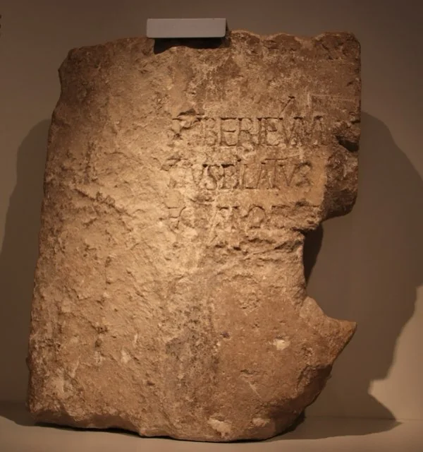
AD 31c. AD 26–36; found 1961The Pilate inscription (Caesarea Maritima)
Pontius Pilate (dedication)
A limestone block from Caesarea Maritima with a Latin dedication naming “Pontius Pilate, Prefect of Judea”. It is the only contemporary inscription naming the governor under whom Jesus was crucified.
→ -
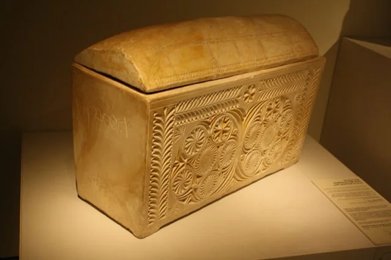
AD 401st century AD; found 1990The Caiaphas ossuary
Unknown (Jerusalem family tomb)
An ornate limestone bone box from a first-century Jerusalem family tomb, inscribed “Joseph son of Caiaphas”. Many scholars hold that it belonged to the family of the high priest Caiaphas who, in the Gospels, questioned Jesus.
→ -
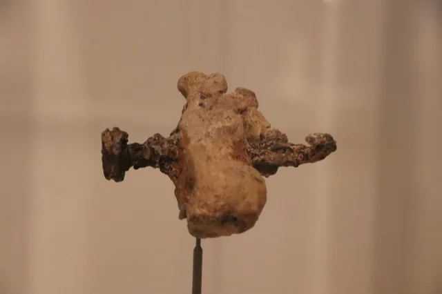
AD 501st century AD; found 1968The heel bone of Yehohanan (Giv’at HaMivtar)
The right heel bone of a young Jewish man named Yehohanan, still pierced by the iron nail that fixed him to a cross. Found in a family tomb in Jerusalem in 1968, it is the only skeletal evidence of crucifixion from Roman Judea.
→ -
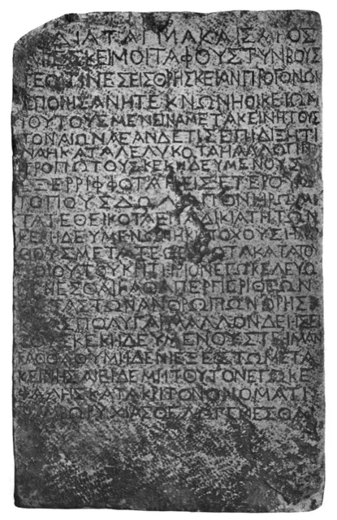
AD 20Early 1st century AD (letter forms)The Nazareth inscription
Unnamed Roman emperor (edict)
A Greek imperial edict on marble forbidding the disturbance of tombs, once linked to Jesus’s empty tomb because it was “sent from Nazareth” in 1878. Isotope analysis (2020) points to marble from Kos; it remains a vivid witness to Roman law on tomb robbery.
→
Places in the Gospels
3 writings-
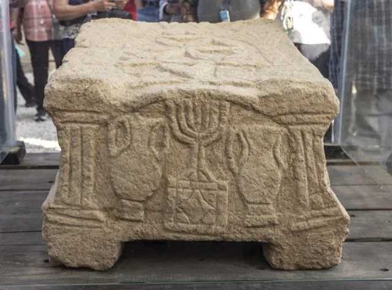
AD 301st century AD; found 2009The Magdala Stone (Galilee)
A carved stone block found in 2009 at the centre of a first-century synagogue at Magdala, on the Sea of Galilee. Its seven-branched menorah, carved while the Temple still stood, makes it one of the earliest Jewish images of the Temple lampstand, in a synagogue from the town of Mary Magdalene.
→ -
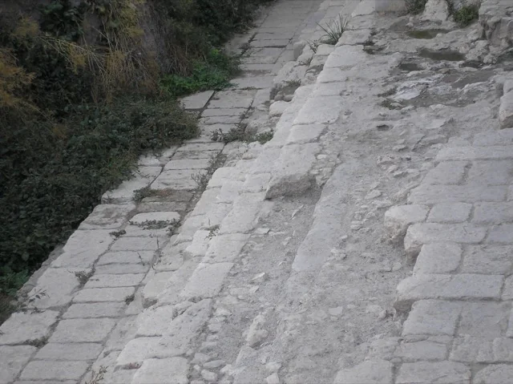
80 BCBuilt 1st century BC; found 2004The Pool of Siloam (Jerusalem)
A large stepped pool at the southern end of ancient Jerusalem, discovered by chance in 2004. Built in the first century BC and used until the Roman destruction of AD 70, it is the pool of Siloam where, in John’s Gospel, Jesus sent a man born blind to wash.
→ -
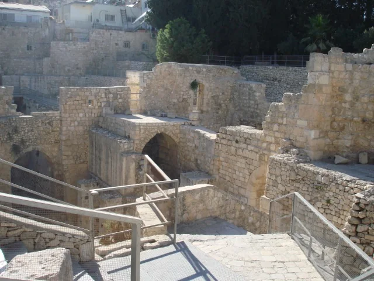
AD 30Second Temple period; excavated from the 19th centuryThe Pool of Bethesda (Jerusalem)
Two large rock-cut basins north of the Temple Mount, in the grounds of the Church of St Anne in Jerusalem. Their layout, with a dividing wall between them, matches John’s description of a pool “having five porches”, where Jesus healed a man who had been ill for thirty-eight years.
→
The first believers
6 writings-
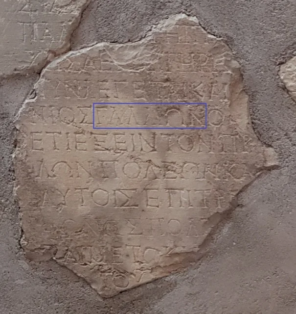
AD 52AD 52; published 1905The Gallio inscription (Delphi)
Emperor Claudius (letter)
Fragments of a letter from the emperor Claudius, carved on stone at Delphi in Greece, naming Gallio as proconsul of Achaia. Dated by Claudius’s titles to AD 52, it fixes Paul’s stay in Corinth, and with it the framework of Paul’s life, to within a year or two.
→ -
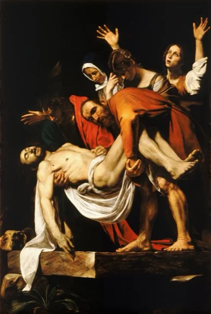
AD 621st century AD (claimed); surfaced 2002The James ossuary (disputed)
Unknown
A limestone bone box inscribed “James, son of Joseph, brother of Jesus”, announced in 2002 without an excavation record. Experts still debate whether the whole inscription is ancient; its owner’s 2012 acquittal left that question to the evidence.
→ -
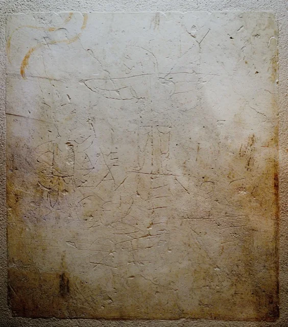
AD 200c. AD 200; found 1857The Alexamenos graffito (Palatine, Rome)
A crude drawing scratched into plaster on the Palatine Hill in Rome: a man raises his hand to a crucified figure with a donkey’s head, above the Greek words “Alexamenos worships his god”. It is a pagan mockery of a Christian, and one of the earliest surviving pictures of the crucifixion.
→ -
 AD 230c. AD 230
AD 230c. AD 230
The Megiddo mosaic (“God Jesus Christ”)
Christian community at Megiddo (Kefar Othnay)
A third-century mosaic floor from a Christian prayer hall near Megiddo, found in 2005, with a Greek dedication “to God Jesus Christ”. It is among the earliest archaeological witnesses to Christian worship of Jesus as God.
→ -
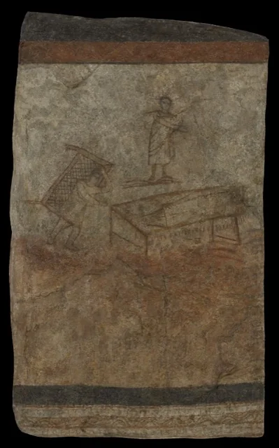
AD 245c. AD 235–256The Christian building at Dura-Europos
Christian community of Dura-Europos
A private house on the Euphrates remodelled for Christian worship, with a baptistery painted with scenes of Christ healing and the women at the tomb. Sealed by the city’s fall around 256, it is a fixed anchor for early Christian art.
→ -
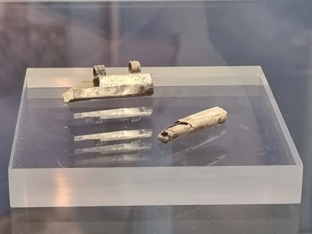
AD 250c. AD 230–270The Frankfurt silver amulet (Nida)
Unknown
A rolled silver amulet from a third-century grave at Roman Nida (Frankfurt), read by CT scanning in 2024. Its text invokes Jesus, making it among the earliest Christian objects found north of the Alps.
→